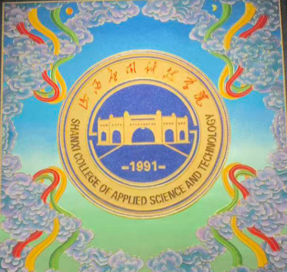
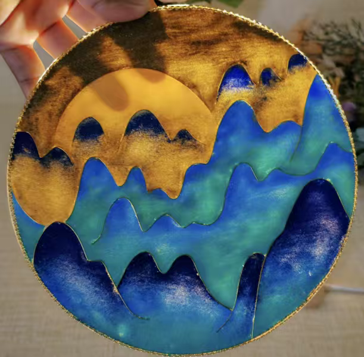
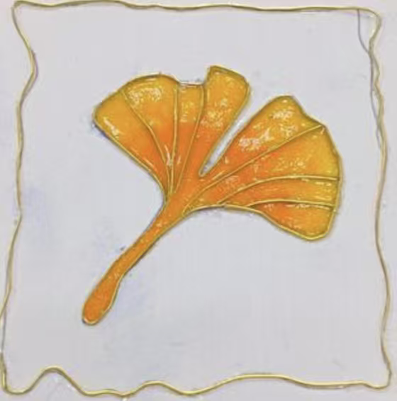

用非遗掐丝珐琅，接住特殊少年的天赋表达。
“特殊并非缺陷，只是天赋的表达方式与众不同。”



STAR LANGUAGE PROJECT · 非遗掐丝 星梦成真 · 天赋发掘 → 作品创作 → 公益义卖 → 善款反哺
这里展示特殊少年的天赋与作品，也传播他们的成长故事，连接每一份善意的支持。
义卖所得按「取之于星，用之于星」的原则，流向家庭、学校、公益机构与每一位购买者。
取丝、弯折、粘贴、填色——每一件作品都由孩子亲手完成，附专属故事卡与爱心证书。
我们为每位孩子建立「一人一档」天赋档案，从第一次握起金丝，到作品被陌生人收藏。
购买一件掐丝珐琅原创作品、为企业定制一份文创礼品、成为一位志愿者——无论以哪种方式，你都在把特殊少年从「被救助者」变成「价值创造者」。义卖收入的 30% 定向捐赠中国残疾人福利基金会，每一笔都可追溯。